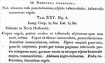

Click on images to enlarge
{kind=link}

Fig. 1. Notoclea verrucosa, description
Name
Notoclea verrucosa Marsham, 1808
Corresponds to
Likely Ta65, but see Diagnosis and Notes below.
Diagnosis and Notes
Blackburn (1897, p176) indicates that he has seen what is probably Marsham's type of this species. He deals with it as part of his 'subgroup iv' (i.e., those species without "strongly marked characters", whose greatest height is considerably in front of the middle of the elytral margin). Within that group, he characterises it as:
AA. Prothorax not (or scarcely) explanate at sides;
BB. The verrucae unpunctured or nearly so;
C. Elytra not having a sharply defined discal transverse wheal-like ridge;
DD. Subhumeral depression wanting;
E. Elytral interstices but little rugulose, at least not to the extent of obscuring the punctures and verrucae;
F. Elytra (at least on hinder part) studded with sharply defined isolated bead-like verrucae;
G. The elytral verrucae small;
H. The elytral puncturation fairly strong and not particularly close;
I. The postbasal impression of elytra not particularly strong and not at all defined behind;
J. The humeral calli dark and not particularly small.
Blackburn compares verrucosa to prodroma, noting that it differs by the latter having "markedly coarser puncturation" of the elytra, less obliquely out-turned elytral margins and humeral calli that are concolorous with the derm. He also compares it to brevissima, indicating that the latter differs by considerably finer elytral puncturation and the presence of a "well marked transverse postbasal impression".
I suspect that this is the same as Ta65, a species that is found over a large area of S.E. Australia and can be abundant at times. The size given by Marsham would be on the higher extreme of the size distribution for Ta65, but is likely an approximation to the nearest half-millimetre. The very similar (and similarly-sized) Ta32 very rarely has a humeral callus that is darker than the surrounding elytral surface, and it tends to be paler ventrally. There is a chance that it could be Ta16, but that species tends to be much darker dorsally and its elytral margins are less noticeably outurned than is typical for Ta65.
Original description
Translation of original description (Figure 1) by ChatGPT, 04/2026:
Notoclea. Dark reddish, very densely punctate; elytra tuberculate, with numerous black tubercles.
Length 3½ lines [~7.4 mm]; width 2½ lines [~5.3 mm].
Habitat: New Holland.
Body red dorsally, except for the eyes and the tubercles of the elytra, which are black. Head and thorax without spots, very finely and densely punctulate. Scutellum unspotted, red. Elytra entirely punctate, with impressed punctures, and moreover over the whole surface sprinkled with small tubercles, of which one on each elytron at the shoulder is larger and comma-shaped. Abdomen blackish-reddish. Legs reddish, with the femora black.
References
Marsham, T. 1808, "Description of Notoclea, a new genus of coleopterous insect from New Holland", Transactions of the Linnean Society of London, vol. 9, 283-295 (page 290).
Copyright © 2026. All rights reserved.